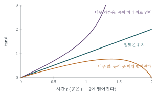

STEP II 1998, 문제 11
계속 읽기 전에 문제를 먼저 읽어 보자. 문제는 STEP Support Programme의 문제 데이터베이스에 있다: step.maths.org/questions/98-s2-q11
도입
공이 외야(outfield) 높이 날아간다. 뛰어난 수비수(fielder)는 즉시 출발하여 공이 떨어지는 바로 그 순간에 도착한다. 어떻게 그럴 수 있을까? 눈 깜짝할 사이에 포물체 운동(projectile motion)의 방정식을 머릿속으로 풀 수 있는 사람은 없으며, 게다가 수비수는 공의 속력이나 각도를 알지 못한다. 그런데도 수비수들은, 그리고 프리스비를 잡는 개들은, 이 일을 아무렇지 않게 해낸다.
1968년 물리학자 Seville Chapman이 하나의 답을 제안했고, 이 문제는 그것을 증명한다. 수비수가 공의 올려본각(angle of elevation) \(\theta\)를 지켜보면서 \(\tan\theta\)가 일정한 비율로 증가하도록 움직이면, 수비수는 공이 떨어지는 곳에 정확히 도착한다. 물리학 지식은 전혀 필요 없고, 공이 일정한 속도보다 더 빠르게 올라가는 것처럼 보이는지 더 느리게 올라가는 것처럼 보이는지만 알아차릴 수 있으면 된다. 어려운 예측 문제가 단순한 피드백(feedback) 규칙으로 바뀌는 것이다.
시작하기 전에
타자(batsman)를 원점에, 수비수를 거리 \(D\)인 곳에 둔다. 공이 \((x, y)\)에 있을 때 \(\tan\theta\)는 무엇인가?
공은 수비수의 눈높이보다 \(y\)만큼 위에 있고, 수비수 앞쪽으로 수평 거리 \(D - x\)만큼 떨어져 있다(공은 수비수 쪽으로 다가오고 있다). 따라서 \(\tan\theta = \frac{y}{D - x}\)이다.
차근차근 풀기
단계 1 완벽한 위치에 있는 수비수
공의 수평 속력을 \(U\), 처음 연직 속력을 \(W\)라 하고, 공이 시각 \(T\)에 (눈높이에) 떨어진다고 하자. \(x\), \(y\), \(D\)를 \(U\), \(W\), \(T\), \(g\), \(t\)로 나타내어라. \(y\)를 인수분해할 수 있는가?
\(x = Ut\)이고 \(y = Wt - \frac12gt^2\)이며, 공은 \(T = \frac{2W}{g}\)에 눈높이로 돌아오는데, 그곳에 수비수가 있다: \(D = UT\). \(W = \frac12gT\)이므로 \[y = \tfrac12gt(T - t), \qquad D - x = U(T - t).\] 인수 \(T - t\)가 약분된다: \[\tan\theta = \frac{\frac12gt(T - t)}{U(T - t)} = \frac{g}{2U}\,t.\] 따라서 \(\frac{\mathrm{d}}{\mathrm{d}t}\tan\theta = \frac{g}{2U}\)로 상수이다.■
단계 2 달리는 수비수
이제 수비수가 거리 \(D_0\)에서 출발하여 속력 \(v\)로 타자를 향해 달린다고 하자. 그러면 수비수의 위치는 \(D_0 - vt\)이다. 수비수는 시각 \(T\)에 공을 잡는다. \(D_0\)는 무엇인가? 같은 계산을 반복하여라.
시각 \(T\)에 공을 잡으려면 수비수는 공이 떨어지는 곳에 있어야 한다: \(D_0 - vT = UT\)이므로 \(D_0 = (U + v)T\)이다. 수비수와 공 사이의 수평 거리는 \(D_0 - vt - Ut = (U + v)(T - t)\)이고, 이번에도 인수가 약분된다: \[\tan\theta = \frac{\frac12gt(T - t)}{(U + v)(T - t)} = \frac{g}{2(U + v)}\,t.\] 따라서 수비수가 알맞은 속력으로 달리고 있다면 \(\tan\theta\)는 일정한 비율로 증가한다.
문제는 그 역(converse)을 묻는다: \(\frac{\mathrm{d}}{\mathrm{d}t}\tan\theta\)가 일정하도록 달린다면, 수비수는 공을 잡을 수 있는가?
수비수가 속력 \(v\)로 달리고 \(\tan\theta = \frac{\frac12gt(T - t)}{D_0 - (U + v)t}\)가 일정한 비율 \(c\)로 증가한다고 하자. 그러면 \(\tan\theta = ct\)이다(\(t = 0\)에서 그 값은 \(0\)이다). 그러면 \[\tfrac12g(T - t) = c\bigl(D_0 - (U + v)t\bigr) \quad\text{모든 } t.\] \(t\)의 계수와 상수항을 비교하면(comparing coefficients) \(\frac12g = c(U + v)\)이고 \(\frac12gT = cD_0\)이다. 두 식을 나누면 \(D_0 = (U + v)T\)인데, 이는 정확히 시각 \(T\)에 낙하 지점에 있기 위한 조건이다. 따라서 수비수는 \(\tan\theta\)가 꾸준히 증가하도록 \(v\)를 고르면 되고, 그러면 공을 잡는다.■

돌아보기
공통인수를 찾아라. 높이와 수평 거리 모두 \(T - t\)를 포함하고 있었고, 이를 약분하자 \(\tan\theta\)가 일차식이 되었다.
역을 증명하라. 규칙이 실제로 통한다는 것(공을 잡게 된다는 것)을 보이려면 계수를 비교하는 반대 방향의 논증이 필요했다.
지각하기 쉬운 불변량. \(\tan\theta\)의 꾸준한 증가는 눈으로 판단할 수 있지만, 낙하 지점은 그럴 수 없다.
숨은 수학
광학적 가속도 상쇄
Chapman의 규칙은 오늘날 광학적 가속도 상쇄(optical acceleration cancellation)라 불린다. 수비수는 “광학적 가속도” \(\frac{\mathrm{d}^2}{\mathrm{d}t^2}\tan\theta\)를 0으로 유지하도록 움직인다. 공의 상이 위로 가속하면 공이 머리 위로 넘어갈 것이므로 뒤로 물러나고, 감속하면 공이 못 미쳐 떨어질 것이므로 앞으로 달려 나간다(그림 11.11.1). 이 전략은 공이 어디에 떨어질지 알려 주지는 않지만, 수비수를 그곳으로 데려다 준다. 이것은 유도 미사일을 조종하는 것과 같은 피드백 제어 법칙(feedback control law)이다. 미사일은 비례 항법(proportional navigation)을 사용하여 목표물에 대한 시선각(line-of-sight angle)을 일정하게 유지하는데, 이는 같은 아이디어의 옆 방향 버전이다.
수비수가 실제로 하는 일
실제 수비수들은 Chapman의 규칙을 사용할까? 1990년대에 야구 외야수의 머리에 카메라를 달고 한 실험들은 엇갈린 결과를 보였다. Michael McBeath와 동료들은 1995년 Science에서, 한쪽 옆으로 날아가는 공의 경우 수비수가 공의 상이 시야를 가로질러 직선으로 움직이도록(“선형 광학 궤적(linear optical trajectory)”) 곡선 경로를 따라 달리며, 이 방법 역시 공을 잡게 해 준다고 주장했다. 이후의 연구는 두 전략과 그 혼합이 모두 사용되며, 수비수가 일정한 속력으로 달리지 않는 경우가 많다는 것을 시사했다. 2004년의 한 연구는 프리스비를 잡는 개들이 같은 광학적 규칙에 부합하는 경로를 따른다는 것을 발견했다. 세부 사항이 어떻든, 놀라운 결론은 변함없다: 공을 잡는 데에는 예측이 필요하지 않고, 올바른 피드백만 있으면 된다.
1968년 American Journal of Physics에 실린 Seville Chapman의 “Catching a baseball”은 세 쪽 분량이며, 본질적으로 이 문제의 계산을 담고 있다. 그는 이 전략이 공기 저항(air resistance)이 없을 때에만 통하며, 실제 야구공의 궤적은 항력(drag)과 회전(spin) 때문에 왜곡되어 상황이 복잡해진다고 지적했다. 그럼에도 불구하고, 뇌가 복잡한 제어 문제를 풀기 위해 시야의 단순한 불변량(invariant)을 이용한다는 아이디어는 심리학과 로봇공학에서 중요해졌다.
사고 기술
어떤 양을 예측하기 어려울 때에는, 직접 관찰할 수 있으면서 일이 제대로 진행될 때에 정확히 단순하게 행동하는 관련된 양을 찾아라.
여기서 낙하 지점은 예측하기 어려웠지만, \(\tan\theta\)의 변화율은 관찰하기 쉬웠다. 대학에서 이것은 피드백 제어의 아이디어이자, 필요한 정보를 담고 있는 관측량(observable)을 고르는 아이디어이다.
더 도전하기
뒤로 달리기. 공이 수비수의 출발 위치보다 뒤에 떨어질 경우, 수비수는 타자에게서 멀어지는 방향으로 달려야 하며 같은 규칙이 적용됨을 보여라.
\(\theta\) 자체는 아니다. 완벽한 위치에 있는 수비수에게 \(\frac{\mathrm{d}\theta}{\mathrm{d}t}\)는 상수가 아님을 보여라. 왜 \(\tan\theta\)가 지켜봐야 할 올바른 양인가?
눈높이. 공이 수비수의 눈높이보다 \(h\)만큼 낮은 높이에서 쳐진다면, 알맞은 위치에 있는 수비수에게 \(\tan\theta\)는 여전히 \(t\)의 일차식인가? (수비수는 눈높이에서 공을 잡는다고 가정한다.)
공기 저항. 선형 공기 저항이 있으면 수평 속도는 지수적으로 감소한다. 알맞은 위치에 있는 수비수에게 \(\tan\theta\)는 여전히 \(t\)의 일차식인가?
더 읽을거리
Seville Chapman, “Catching a baseball”, American Journal of Physics 36 (1968). (야구공 잡기)
Michael McBeath, Dennis Shaffer & Mary Kaiser, “How baseball outfielders determine where to run to catch fly balls”, Science 268 (1995). (야구 외야수는 뜬공을 잡기 위해 어디로 달릴지 어떻게 결정하는가)
Dennis Shaffer et al., “How dogs navigate to catch Frisbees”, Psychological Science 15 (2004). (개는 프리스비를 잡기 위해 어떻게 길을 찾는가)